25+ No-Bake Christmas Desserts for a Crowd
📌 Save to Pinterest
The oven is already busy with the turkey and the ham — so let dessert take care of itself. This roundup gathers twenty-five no-bake Christmas desserts for a crowd: truffles you can roll by the dozen, cheesecakes that set in the fridge, bars that slice cleanly for a party, and festive cups and parfaits that look like they took hours. No oven needed, no stress, and every one of them tastes like the holidays.
How to plan no-bake desserts for a crowd
No-bake desserts are made for crowds because most of them are made in a pan, a bowl, or a tray — and they scale up easily. Pick one showpiece (a cheesecake or a trifle), one bite-size treat (truffles or bars), and one lighter option (mousse cups or fruit parfaits), and the dessert table is done. Almost everything here needs fridge time, so make them the day before and free up the whole day of the party. Keep chilled desserts cold until serving, and set out small plates so guests can take a little of everything.
Good to know: Everything is written in American English, and measurements use US customary units — cups, tablespoons, and Fahrenheit — for cooks in the United States. Always follow safe food-handling guidance, and keep dairy and egg desserts refrigerated until serving time.
Food safety: keep chilled desserts refrigerated until serving, and refrigerate leftovers promptly. Egg dishes should reach 160°F (71°C)..
Truffles & bites
Small, rich, and easy to make by the dozen — truffles are the simplest crowd dessert there is.
1. Classic Chocolate Truffles
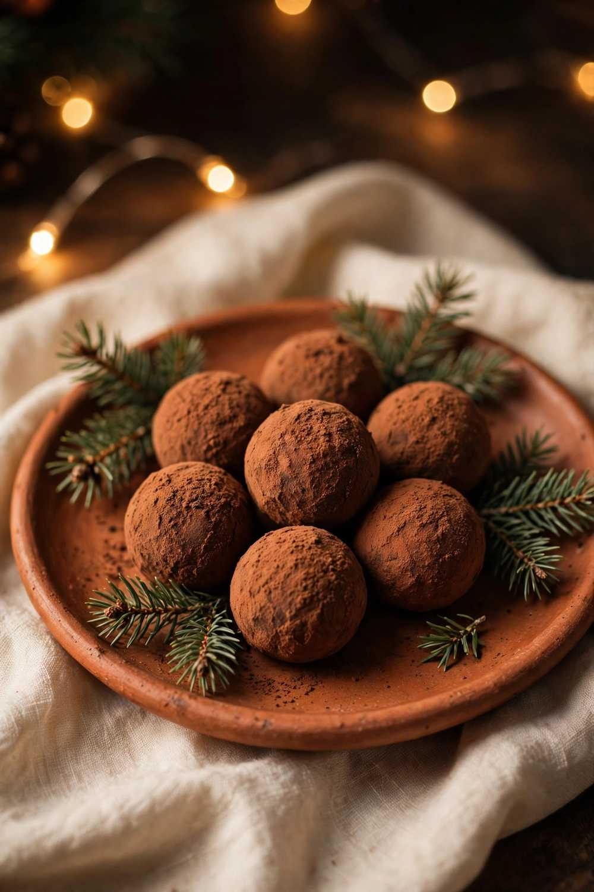
These dark, silky truffles taste like they came straight from a chocolate shop, with a rich ganache center and a dusty cocoa finish. They are small and intensely flavored, so one or two per guest is plenty. Rolled by the dozen, they are the simplest elegant bite for a Christmas dessert table, and they keep beautifully chilled until serving time.
Ingredients
- 8 ounces semisweet chocolate, finely chopped
- 1/2 cup heavy cream
- 2 tablespoons unsalted butter
- 1 teaspoon vanilla extract
- 1/4 cup unsweetened cocoa powder, for rolling
- 1 pinch salt
Directions
- Place the finely chopped semisweet chocolate in a medium heatproof bowl and set it on the counter.
- Pour the heavy cream into a small saucepan and heat it over medium heat just until it simmers around the edges, about 2 to 3 minutes. Do not let it boil.
- Pour the hot cream over the chocolate and let it sit undisturbed for 2 minutes so the chocolate melts.
- Add the butter, vanilla extract, and salt, then stir slowly from the center outward until the mixture is smooth, glossy, and fully combined.
- Cover the bowl and refrigerate for 2 hours, until the ganache is firm enough to scoop and hold its shape.
- Scoop small portions, about 1 tablespoon each, and roll them quickly between your palms into smooth balls.
- Roll each ball in the cocoa powder until evenly coated, then chill on a lined tray until serving.
2. Peppermint Truffles
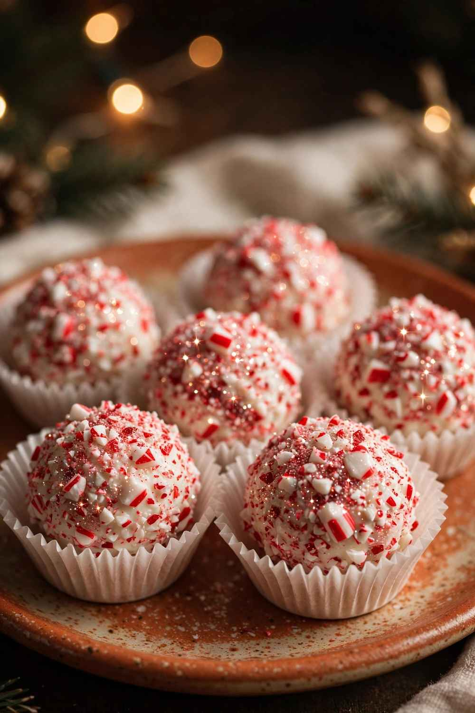
Cool, creamy white chocolate truffles flavored with peppermint and rolled in crushed candy cane, these taste like Christmas in a single bite. The red and white sparkle makes them look festive on any dessert table, and their minty sweetness is a refreshing change from rich chocolate. Make them ahead and keep them chilled until the party.
Ingredients
- 8 ounces white chocolate, finely chopped
- 1/3 cup heavy cream
- 1 tablespoon unsalted butter
- 1/2 teaspoon peppermint extract
- 1/2 cup crushed candy canes, for rolling
Directions
- Place the finely chopped white chocolate in a medium heatproof bowl.
- Pour the heavy cream into a small saucepan and heat it over medium heat just until it simmers, about 2 minutes. Do not let it boil, or the white chocolate may seize.
- Pour the hot cream over the white chocolate and let it sit undisturbed for 2 minutes so the chocolate melts.
- Add the butter and peppermint extract, then stir gently until the mixture is smooth, creamy, and fully combined.
- Cover the bowl and refrigerate for 2 hours, until the mixture is firm enough to scoop and roll.
- Scoop small portions and roll them quickly between your palms into smooth, even balls.
- Roll each ball in the crushed candy cane until coated, pressing lightly so the pieces stick, then chill until serving.
3. Peanut Butter Balls
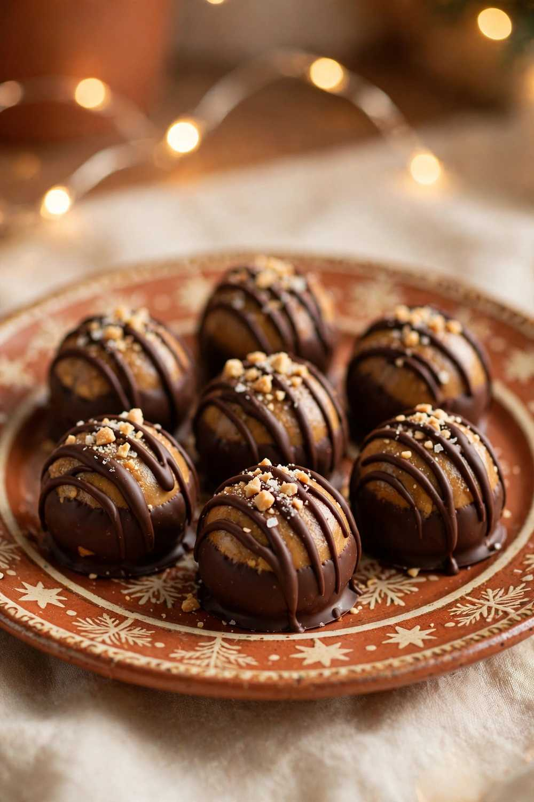
These creamy peanut butter balls have a soft, sweet filling under a smooth chocolate shell, finished with a pretty drizzle. They are rich, salty-sweet, and completely irresistible, which is why they are always the first thing to disappear from the dessert table. Make a double batch for a crowd, because one batch is never enough.
Ingredients
- 1 cup creamy peanut butter
- 1/4 cup unsalted butter, softened
- 1 1/2 cups powdered sugar
- 1 teaspoon vanilla extract
- 8 ounces semisweet chocolate, melted
- 1 pinch salt
Directions
- In a large bowl, beat the peanut butter, softened butter, powdered sugar, vanilla extract, and salt together with a spoon or mixer until smooth, thick, and fully combined.
- Roll the mixture into balls about 1 inch across, using your palms, and place them on a baking sheet lined with parchment paper.
- Freeze the balls for 30 minutes, until they are firm enough to dip without softening or losing their shape.
- Melt the semisweet chocolate in a heatproof bowl in the microwave in 30-second bursts, stirring between each, until smooth.
- Dip each cold ball into the melted chocolate, turning it with a fork, and let the extra chocolate drip off for a few seconds.
- Set the dipped balls back on the lined sheet and drizzle any remaining chocolate over the tops if you like.
- Chill for 30 minutes, until the chocolate shell is fully set, then serve cold or at cool room temperature.
4. Rum Balls

Rich, boozy rum balls rolled in cocoa or chopped nuts, these no-bake bites keep for days and actually taste better the next day, once the flavors have had time to meld. They are dark, sweet, and grown-up, with a soft crumbly texture and a deep rum warmth. Make them early in the week and let them rest in the fridge until the party.
Ingredients
- 2 cups vanilla wafer crumbs
- 1 cup powdered sugar
- 1/4 cup unsweetened cocoa powder
- 1 cup finely chopped pecans
- 1/3 cup dark rum
- 3 tablespoons honey
- 1/2 cup cocoa powder or chopped nuts, for rolling
Directions
- In a large bowl, stir the vanilla wafer crumbs, powdered sugar, cocoa powder, and finely chopped pecans together until evenly mixed.
- Pour in the dark rum and honey, then mix with a spoon until the crumbs are moistened and the mixture holds together when squeezed in your hand.
- Roll the mixture into balls about 1 inch across, pressing firmly so they keep their shape.
- Roll each ball in the cocoa powder or chopped nuts until evenly coated, pressing lightly so the coating sticks.
- Place the balls in a single layer in an airtight container and refrigerate for at least 2 hours so the flavors can develop.
- Serve chilled, and keep any leftovers in the airtight container in the refrigerator for up to 1 week.
5. Coconut Snowballs
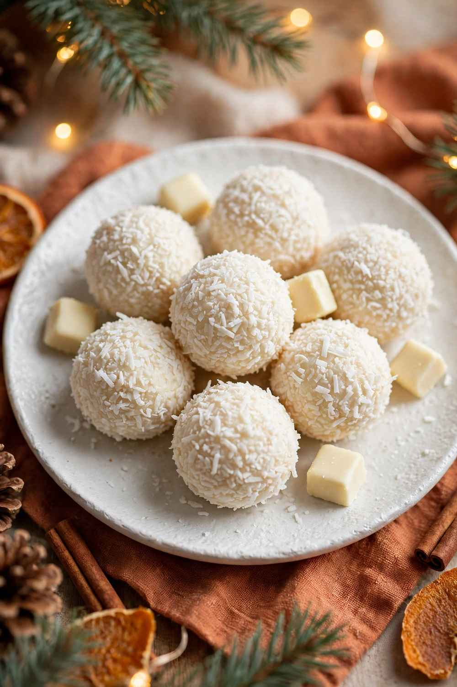
These white chocolate and coconut bites look like little snowballs, rolled in shredded coconut until they are snowy white all over. They are sweet, chewy, and creamy inside, with a crisp white chocolate shell that cracks gently as you bite in. Light and pretty, they are made for a winter dessert table and disappear fast.
Ingredients
- 1 can (14 ounces) sweetened condensed milk
- 3 cups sweetened shredded coconut, plus more for rolling
- 1 teaspoon vanilla extract
- 8 ounces white chocolate, melted
- 1 pinch salt
Directions
- In a large bowl, stir the sweetened condensed milk, 3 cups of shredded coconut, vanilla extract, and salt together until the coconut is evenly moistened and the mixture is thick and sticky.
- Cover the bowl and refrigerate for 1 hour, until the mixture is firm enough to roll without sticking to your hands.
- Roll the chilled mixture into balls about 1 inch across, using damp hands if the mixture sticks, and set them on a lined baking sheet.
- Melt the white chocolate in a heatproof bowl in the microwave in 30-second bursts, stirring between each, until smooth and pourable.
- Dip each coconut ball into the melted white chocolate, turning it with a fork, and let the extra chocolate drip off.
- While the chocolate is still wet, roll each ball in the extra shredded coconut until coated, then set it back on the sheet.
- Chill for 30 minutes, until the white chocolate is fully set, then serve chilled.

Cheesecakes & pies
A chilled cheesecake or a silky pie is the showpiece of a no-bake dessert table — slice it at the table and let everyone watch.
6. No-Bake Cranberry Cheesecake
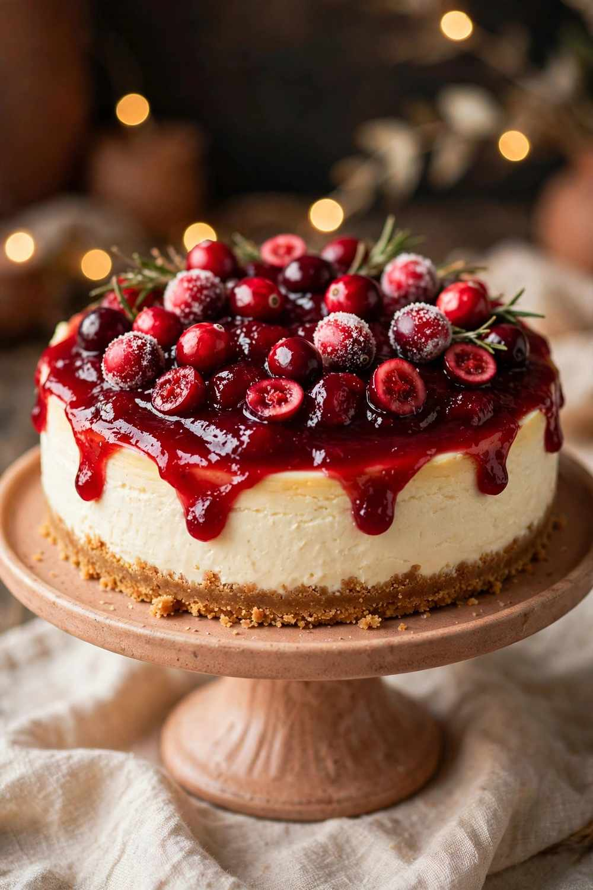
A creamy, smooth cheesecake on a buttery graham cracker crust, topped with a bright red cranberry sauce that looks made for Christmas. The tart cranberries cut through the richness of the cream cheese filling, so every slice tastes balanced and festive. Make it the day before and slice it cold at the table.
Ingredients
- 1 1/2 cups graham cracker crumbs
- 6 tablespoons unsalted butter, melted
- 2 tablespoons sugar
- 16 ounces cream cheese, softened
- 3/4 cup powdered sugar
- 1 cup heavy cream, whipped
- 1 teaspoon vanilla extract
- 1 cup cranberry sauce
Directions
- In a medium bowl, mix the graham cracker crumbs, melted butter, and sugar until the crumbs are evenly moistened and hold together when pressed.
- Press the crumb mixture firmly and evenly into the bottom of a 9-inch springform pan, using the bottom of a glass to pack it down. Chill for 30 minutes.
- In a large bowl, beat the softened cream cheese and powdered sugar with a mixer on medium speed until completely smooth, about 2 minutes, scraping down the sides.
- Gently fold in the whipped cream and vanilla extract with a spatula, using slow strokes, until no streaks remain and the filling is light and fluffy.
- Spread the filling over the chilled crust and smooth the top with an offset spatula or the back of a spoon.
- Spoon the cranberry sauce over the top and spread it gently to the edges.
- Refrigerate for at least 6 hours, or overnight, until fully set, then run a knife around the edge, release the pan, and slice with a warm knife.
7. Peppermint Cheesecake

This cool, minty cheesecake tastes like a peppermint stick, with a dark chocolate cookie crust, a creamy peppermint filling, and a crunchy crushed candy cane topping. It slices cleanly from the fridge into neat wedges, and the red and white topping makes it look like Christmas. Serve it cold, straight from the refrigerator.
Ingredients
- 1 1/2 cups chocolate cookie crumbs
- 6 tablespoons unsalted butter, melted
- 16 ounces cream cheese, softened
- 3/4 cup powdered sugar
- 1 cup heavy cream, whipped
- 1/2 teaspoon peppermint extract
- 1/2 cup crushed candy canes
Directions
- In a medium bowl, mix the chocolate cookie crumbs and melted butter until the crumbs are evenly moistened.
- Press the crumb mixture firmly into the bottom of a 9-inch springform pan, using the bottom of a glass to pack it into an even layer. Chill for 30 minutes.
- In a large bowl, beat the softened cream cheese and powdered sugar with a mixer until completely smooth, about 2 minutes, scraping down the sides of the bowl.
- Gently fold in the whipped cream, peppermint extract, and half of the crushed candy cane with a spatula, until the filling is light, even, and free of streaks.
- Spread the filling over the chilled crust and smooth the top, then sprinkle the remaining crushed candy cane evenly over the surface.
- Refrigerate for at least 6 hours, or overnight, until fully set.
- Run a thin knife around the edge, release the springform pan, and slice with a warm, dry knife for clean edges.
8. Gingerbread Cheesecake

A spiced cheesecake on a crisp gingersnap crust, full of warm ginger, cinnamon, and cloves, topped with whipped cream and gingerbread cookies. It tastes like gingerbread in creamy form, rich but brightened by the spices. It is the cheesecake to make when the rest of the menu is simple, because it brings all the holiday flavor itself.
Ingredients
- 1 1/2 cups gingersnap crumbs
- 6 tablespoons unsalted butter, melted
- 16 ounces cream cheese, softened
- 3/4 cup powdered sugar
- 1 cup heavy cream, whipped
- 1 teaspoon ground ginger
- 1 teaspoon ground cinnamon
- 1/4 teaspoon ground cloves
- Whipped cream and gingerbread cookies, to serve
Directions
- In a medium bowl, mix the gingersnap crumbs and melted butter until the crumbs are evenly moistened and clump together when pressed.
- Press the crumb mixture firmly into the bottom of a 9-inch springform pan, using the bottom of a glass to make an even, compact layer. Chill for 30 minutes.
- In a large bowl, beat the softened cream cheese, powdered sugar, ground ginger, cinnamon, and cloves with a mixer until completely smooth, about 2 minutes, scraping down the sides.
- Gently fold in the whipped cream with a spatula, using slow, wide strokes, until the filling is light, fluffy, and free of streaks.
- Spread the filling over the chilled crust and smooth the top with an offset spatula.
- Refrigerate for at least 6 hours, or overnight, until the cheesecake is fully set and holds its shape when sliced.
- Just before serving, run a knife around the edge, release the pan, and top with whipped cream and gingerbread cookies.
9. Chocolate Silk Pie
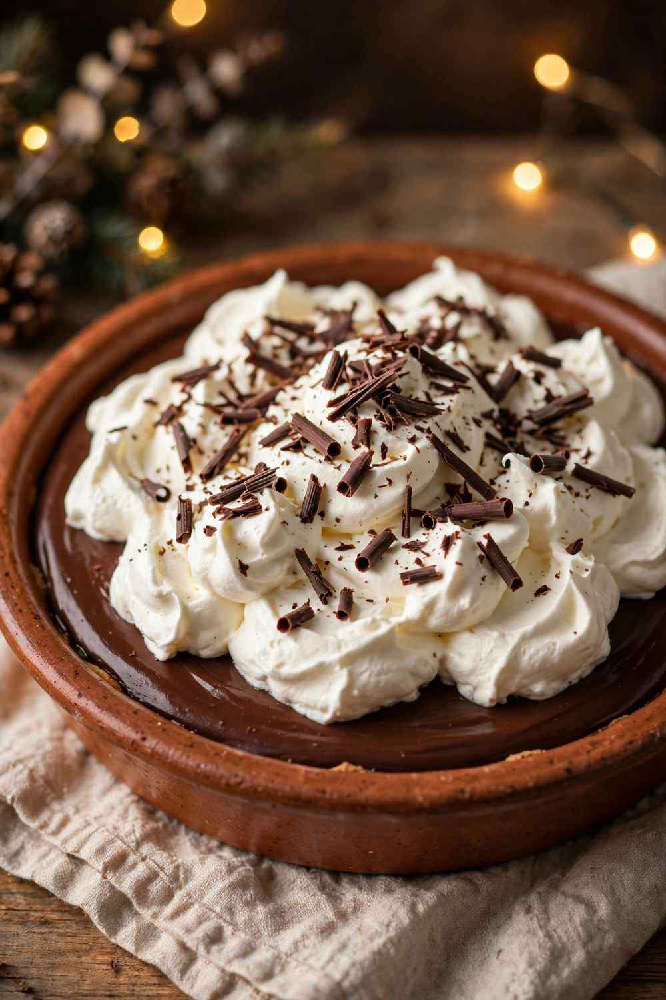
A silky, rich chocolate filling whipped light with cream cheese and cream, set in a chocolate cookie crust and finished with whipped cream and chocolate shavings. It is smooth, deeply chocolatey, and completely oven-free, yet it tastes like the most luxurious pie on the table. Chill it well and slice it cold.
Ingredients
- 1 chocolate cookie crust (9-inch, store-bought or homemade)
- 8 ounces semisweet chocolate, melted and slightly cooled
- 8 ounces cream cheese, softened
- 1/2 cup powdered sugar
- 1 cup heavy cream, whipped
- 1 teaspoon vanilla extract
- Chocolate shavings, to serve
Directions
- In a large bowl, beat the softened cream cheese and powdered sugar with a mixer on medium speed until completely smooth and creamy, about 2 minutes.
- Pour in the melted and slightly cooled semisweet chocolate and the vanilla extract, then beat again until the mixture is evenly chocolatey with no pale streaks.
- Gently fold in the whipped cream with a spatula, using slow strokes, until the filling is light, airy, and free of streaks.
- Spoon the filling into the chocolate cookie crust and spread it into an even layer, smoothing the top.
- Refrigerate for at least 4 hours, until the pie is fully set and holds its shape when sliced.
- Just before serving, top with extra whipped cream and a generous scatter of chocolate shavings, then slice with a warm knife.
10. Eggnog Cream Pie
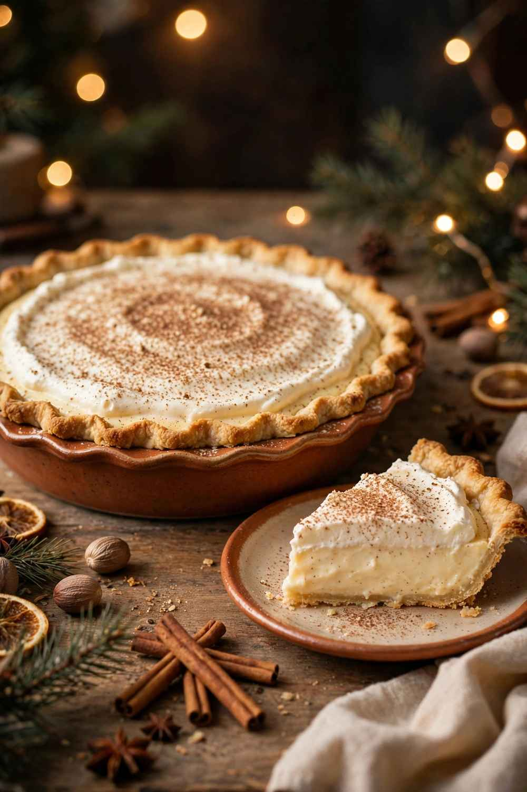
A creamy eggnog-flavored pie with a dusting of nutmeg on top, set in a graham cracker crust and finished with clouds of whipped cream. It tastes like the holidays in a slice, sweet, spiced, and silky, with the gentle warmth of nutmeg in every bite. Make it ahead and keep it chilled until dessert time.
Ingredients
- 1 graham cracker crust (9-inch)
- 1 package (3.4 ounces) instant vanilla pudding mix
- 1 1/2 cups eggnog
- 1/2 teaspoon ground nutmeg, plus more to serve
- 1 cup heavy cream, whipped
- 1/2 teaspoon rum extract (optional)
Directions
- In a large bowl, whisk the instant vanilla pudding mix, eggnog, ground nutmeg, and rum extract, if using, together for about 2 minutes, until the mixture is thick, smooth, and creamy.
- Gently fold in half of the whipped cream with a spatula, using slow strokes, until the filling is light and evenly combined.
- Spoon the filling into the graham cracker crust and spread it into an even layer, smoothing the top.
- Refrigerate for at least 4 hours, until the pie is fully set and holds its shape when sliced.
- Just before serving, spread or pipe the remaining whipped cream over the top and dust it lightly with extra ground nutmeg.
Bars & slices
Bars are the workhorse of a crowd dessert table: one pan, clean slices, and easy to stack on a plate.
11. Peppermint Bark

Layers of dark and white chocolate with crushed candy cane, broken into shards that look like stained glass. It is sweet, minty, and crunchy, with the two chocolates melting together in every bite. It takes only minutes of hands-on work, yet it looks impressive piled on a plate or tucked into gift bags.
Ingredients
- 12 ounces dark chocolate, chopped
- 12 ounces white chocolate, chopped
- 1/2 teaspoon peppermint extract
- 1/2 cup crushed candy canes
Directions
- Line a rimmed baking sheet with parchment paper, leaving a little overhang on the sides.
- Place the dark chocolate in a microwave-safe bowl and melt it in 30-second bursts, stirring well between each, until completely smooth and glossy.
- Pour the melted dark chocolate onto the parchment and spread it into an even layer about 1/4 inch thick with an offset spatula.
- Chill the dark chocolate layer for 20 minutes, until it is firm to the touch but not ice cold.
- Melt the white chocolate the same way, in 30-second bursts with stirring, then stir in the peppermint extract and spread it evenly over the dark layer.
- Sprinkle the crushed candy cane evenly over the white chocolate, pressing very lightly so the pieces stick.
- Chill for 1 hour, until completely firm, then lift the bark from the pan and break it into shards by hand or with a knife.
12. Christmas Rocky Road

Chocolate, marshmallows, nuts, and dried cranberries set into a slab and cut into squares, sweet, crunchy, and festive in every bite. The red cranberries and white marshmallows look like Christmas against the dark chocolate, and the nuts add a satisfying crunch. One pan makes a whole tray of treats for a crowd.
Ingredients
- 12 ounces semisweet chocolate, chopped
- 2 tablespoons unsalted butter
- 2 cups mini marshmallows
- 1 cup chopped walnuts or pecans
- 1/2 cup dried cranberries
- 1/2 cup crushed shortbread or graham crackers
Directions
- Line an 8-inch square pan with parchment paper, leaving overhang on two sides so you can lift the slab out later.
- Place the semisweet chocolate and butter in a microwave-safe bowl and melt them in 30-second bursts, stirring between each, until smooth and glossy.
- Let the chocolate cool for 2 to 3 minutes, then stir in the mini marshmallows, chopped nuts, dried cranberries, and crushed cookie crumbs until everything is evenly coated.
- Scrape the mixture into the lined pan and press it into an even layer with a spatula, pushing it into the corners.
- Chill for at least 2 hours, until the slab is completely firm and holds together.
- Lift the slab out of the pan using the parchment overhang, set it on a cutting board, and cut it into squares with a sharp knife.
13. No-Bake Cookie Bars
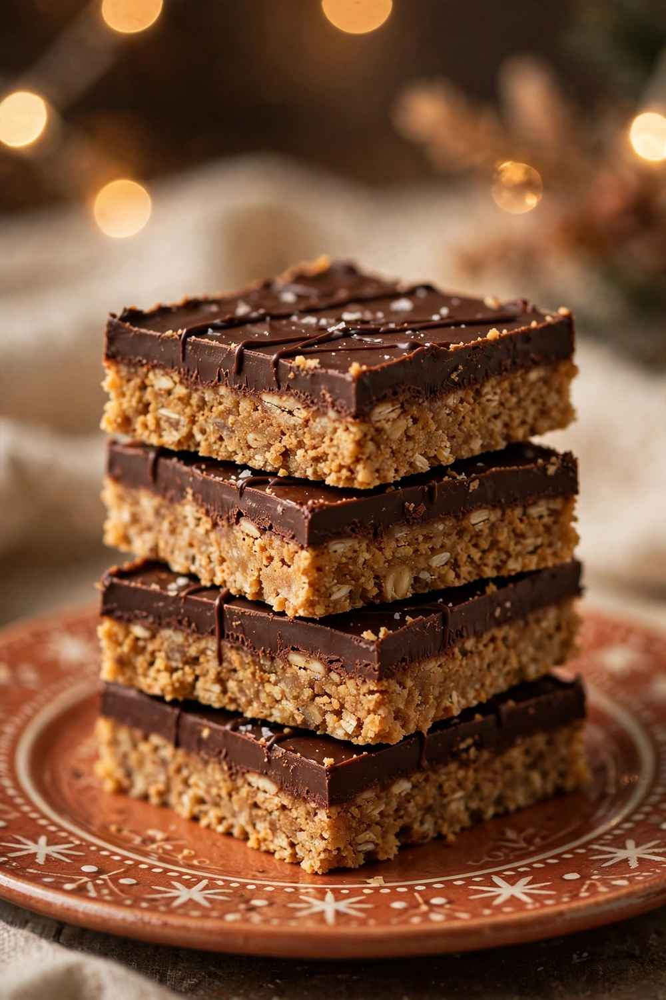
Crushed cookies, chocolate, and a creamy layer pressed into a pan and chilled until firm, these bars slice neatly and travel well to a party. They are rich, chocolatey, and satisfying, with a crunchy base, a smooth cream cheese middle, and a glossy chocolate top. Cut them small, because they are very rich.
Ingredients
- 2 cups chocolate cookie crumbs
- 1/2 cup unsalted butter, melted
- 8 ounces cream cheese, softened
- 1 cup powdered sugar
- 8 ounces semisweet chocolate, melted
- 1/2 cup crushed cookies, for topping
Directions
- Line an 8-inch square pan with parchment paper, leaving overhang on two sides for easy lifting.
- In a medium bowl, mix the chocolate cookie crumbs and melted butter until the crumbs are evenly moistened, then press the mixture firmly into the bottom of the pan in an even layer.
- Chill the base for 20 minutes, until it is firm to the touch.
- In a large bowl, beat the softened cream cheese and powdered sugar until completely smooth, about 2 minutes, then spread the mixture evenly over the chilled base.
- Pour the melted semisweet chocolate over the cream cheese layer and spread it into a smooth, even top with an offset spatula.
- Sprinkle the crushed cookies evenly over the chocolate while it is still soft.
- Chill for at least 3 hours, until firm, then lift the slab out of the pan and cut it into bars with a sharp knife.
14. Peanut Butter Bars

A thick, salty-sweet peanut butter layer under a smooth chocolate top, cut into squares, these are the bars everyone asks about. They taste like a peanut butter cup in bar form, rich and creamy with a satisfying chocolate snap. They are easy to make, easy to slice, and easy to stack on a dessert plate.
Ingredients
- 1 cup creamy peanut butter
- 1/2 cup unsalted butter, melted
- 1 1/2 cups powdered sugar
- 2 cups graham cracker crumbs
- 8 ounces semisweet chocolate, melted
- 2 tablespoons chopped peanuts, for topping
Directions
- Line an 8-inch square pan with parchment paper, leaving overhang on two sides for easy lifting.
- In a large bowl, stir the peanut butter, melted butter, powdered sugar, and graham cracker crumbs together until fully combined into a thick, even mixture.
- Press the mixture firmly and evenly into the bottom of the lined pan, using the bottom of a glass to pack it down and smooth the top.
- Chill the base for 20 minutes, until it is firm to the touch.
- Pour the melted semisweet chocolate over the chilled base and spread it into a smooth, even layer, then sprinkle the chopped peanuts over the top.
- Chill for at least 2 hours, until the chocolate is fully set.
- Lift the slab out of the pan using the parchment overhang and cut it into bars with a sharp knife.
15. Cranberry Bliss Bars
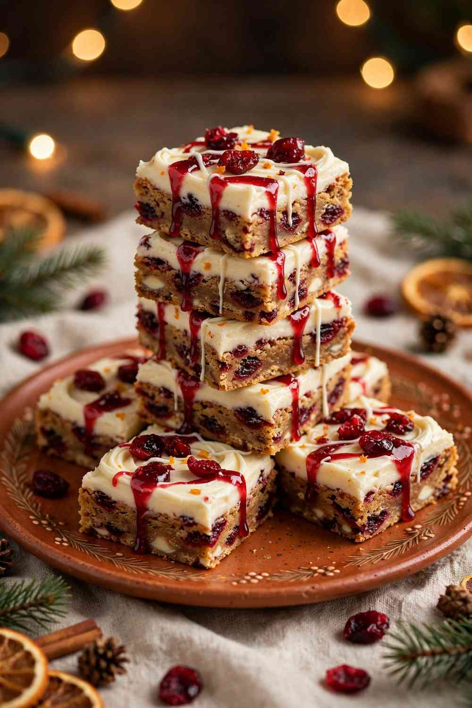
White chocolate and cranberry bars with a cream cheese frosting and a cranberry drizzle, these taste like the coffee-shop favorite, made at home. They are sweet, tart, and creamy all at once, with chewy cranberries in a smooth white chocolate layer over a buttery shortbread base. Cut them into neat squares and watch them disappear.
Ingredients
- 2 cups shortbread cookie crumbs
- 1/2 cup unsalted butter, melted
- 8 ounces cream cheese, softened
- 1/2 cup powdered sugar
- 1 cup white chocolate chips, melted
- 1/2 cup dried cranberries, chopped
- 1/4 cup cranberry sauce, for drizzling
Directions
- Line an 8-inch square pan with parchment paper, leaving overhang on two sides for easy lifting.
- In a medium bowl, mix the shortbread cookie crumbs and melted butter until evenly moistened, then press the mixture firmly into the bottom of the pan in an even layer.
- Chill the base for 20 minutes, until it is firm to the touch.
- In a large bowl, beat the softened cream cheese and powdered sugar until completely smooth, about 2 minutes, then beat in the melted white chocolate until evenly combined.
- Fold in the chopped dried cranberries with a spatula and spread the mixture evenly over the chilled base, smoothing the top.
- Drizzle the cranberry sauce over the top in thin lines, using a spoon or a small squeeze bottle.
- Chill for at least 3 hours, until firm, then lift the slab out of the pan and cut it into bars with a sharp knife.
Cups & parfaits
Individual cups and parfaits are made for parties — no slicing, no serving, just pick one up and enjoy.
16. Chocolate Mousse Cups

Light, airy chocolate mousse spooned into small cups with whipped cream on top, these are elegant, rich, and easy to make ahead. The mousse is silky and deeply chocolatey, yet it feels light because of all the folded-in whipped cream. Serve them cold in little glasses for a dessert that looks far fancier than the effort it took.
Ingredients
- 8 ounces semisweet chocolate, chopped
- 1 1/2 cups heavy cream, divided
- 2 tablespoons powdered sugar
- 1 teaspoon vanilla extract
- Whipped cream and chocolate shavings, to serve
Directions
- Place the chopped semisweet chocolate in a medium heatproof bowl.
- Pour 1/2 cup of the heavy cream into a small saucepan and heat it over medium heat just until it simmers, about 2 minutes, then pour it over the chocolate.
- Let the mixture sit undisturbed for 2 minutes, then stir slowly until it is completely smooth and glossy.
- Stir in the vanilla extract and let the chocolate cool to room temperature, about 20 minutes, stirring once or twice so it does not set.
- In a large chilled bowl, whip the remaining 1 cup of heavy cream with the powdered sugar until soft peaks form, when the cream holds its shape but the tips curl over.
- Gently fold the whipped cream into the cooled chocolate in two additions, using slow strokes, until no streaks remain and the mousse is light and airy.
- Spoon the mousse into small cups and chill for at least 2 hours, until set, then top with whipped cream and chocolate shavings before serving.
17. Peppermint Mousse Cups

Cool peppermint mousse layered with crushed candy cane in a glass, these look beautiful on a dessert table and taste like a candy cane. The white chocolate mousse is sweet and creamy, the peppermint keeps it fresh, and the crunchy candy pieces add color and texture. Make them ahead and keep them chilled until serving.
Ingredients
- 8 ounces white chocolate, chopped
- 1 1/2 cups heavy cream, divided
- 1/2 teaspoon peppermint extract
- 1/2 cup crushed candy canes
- Whipped cream, to serve
Directions
- Place the chopped white chocolate in a medium heatproof bowl.
- Pour 1/2 cup of the heavy cream into a small saucepan and heat it over medium heat just until it simmers, about 2 minutes, then pour it over the white chocolate.
- Let the mixture sit undisturbed for 2 minutes, then stir slowly until it is completely smooth, being careful not to overheat the white chocolate.
- Stir in the peppermint extract and let the mixture cool to room temperature, about 20 minutes, stirring once or twice so it stays smooth.
- In a large chilled bowl, whip the remaining 1 cup of heavy cream until soft peaks form, when the cream holds its shape but the tips curl over.
- Gently fold the whipped cream and half of the crushed candy cane into the cooled white chocolate until no streaks remain and the mousse is light and even.
- Layer the mousse into small glasses with the remaining crushed candy cane, chill for at least 2 hours, then top with whipped cream before serving.
18. Eggnog Panna Cotta
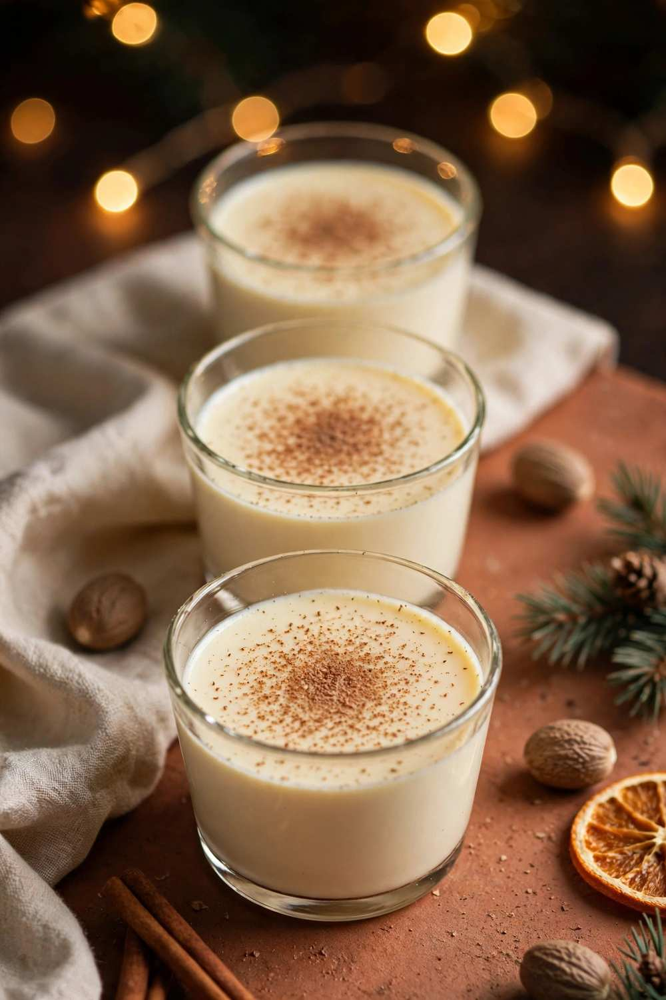
A silky eggnog panna cotta with a dusting of nutmeg, set in small glasses, it is the most elegant dessert on this list. The panna cotta is smooth, creamy, and gently spiced, with the rich flavor of eggnog in a light, wobbly set cream. Serve it cold, dusted with nutmeg, for a refined finish to a holiday meal.
Ingredients
- 2 cups eggnog
- 1 cup heavy cream
- 1/4 cup sugar
- 2 teaspoons powdered gelatin
- 3 tablespoons cold water
- 1 teaspoon vanilla extract
- Ground nutmeg, to serve
Directions
- Sprinkle the powdered gelatin evenly over the cold water in a small bowl and let it bloom for 5 minutes, until it looks spongy and absorbs the water.
- Pour the eggnog, heavy cream, and sugar into a medium saucepan and heat over medium heat, stirring, until the mixture is hot and the sugar dissolves, about 4 to 5 minutes. Do not let it boil.
- Remove the pan from the heat and add the bloomed gelatin and vanilla extract, stirring until the gelatin is completely dissolved and the mixture is smooth.
- Let the mixture cool for 5 minutes, stirring once, then pour it evenly into small glasses or ramekins.
- Cover and chill for at least 4 hours, until the panna cotta is set and just wobbles gently when shaken.
- Just before serving, dust the top of each panna cotta lightly with ground nutmeg.
19. Berry Trifle Cups

Layers of cake, cream, and berries in individual glasses, these trifle cups are easy to assemble, look stunning, and give everyone their own dessert. The soft cake soaks up the custard, the berries add tart brightness, and the whipped cream on top makes each cup feel festive. Build them the morning of the party and chill until serving.
Ingredients
- 1 store-bought pound cake or angel food cake, cubed
- 2 cups mixed berries (strawberries, raspberries, blueberries)
- 2 cups whipped cream or whipped topping
- 1/2 cup vanilla custard or pudding
- Fresh mint, to serve
Directions
- Cut the pound cake or angel food cake into bite-size cubes, about 1 inch across, and set them in a bowl.
- Rinse the berries gently and pat them dry; hull and slice any large strawberries so all the berries are roughly the same size.
- Place a layer of cake cubes in the bottom of each glass, pressing them down lightly so they sit flat.
- Spoon a layer of vanilla custard over the cake, then add a layer of mixed berries on top.
- Repeat the layers of cake, custard, and berries until each glass is nearly full, ending with berries.
- Top each cup with a generous spoonful of whipped cream and a few extra berries, then garnish with fresh mint.
- Chill for at least 1 hour before serving so the layers settle and the cake softens slightly.
20. Tiramisu Cups
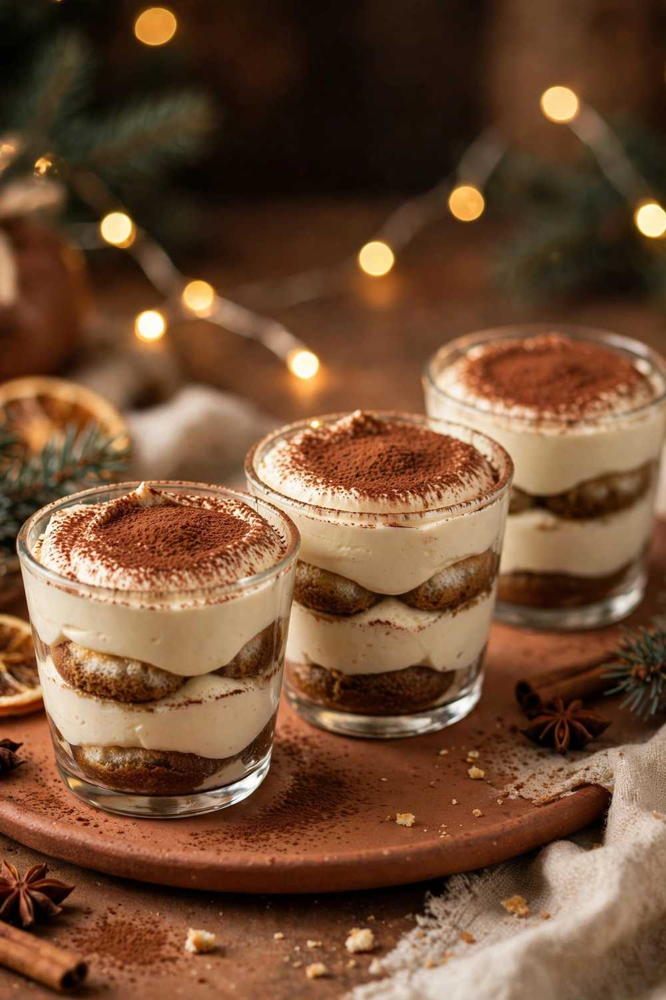
Coffee-soaked ladyfingers layered with mascarpone cream in small cups, dusted with cocoa, this is a classic made party-friendly. The mascarpone is rich and smooth, the coffee gives it a gentle bitterness, and the cocoa dusting on top makes each cup look elegant. Chill them well so the layers set and the flavors meld.
Ingredients
- 1 cup mascarpone cheese
- 1 cup heavy cream, whipped
- 1/4 cup powdered sugar
- 1 cup strong coffee, cooled
- 12 ladyfinger cookies
- Unsweetened cocoa powder, to serve
Directions
- In a large bowl, beat the mascarpone cheese and powdered sugar with a spoon or mixer until completely smooth and creamy, about 1 minute.
- Gently fold in the whipped cream with a spatula, using slow strokes, until the mixture is light, fluffy, and free of streaks.
- Pour the cooled strong coffee into a shallow dish wide enough to dip the ladyfingers.
- Dip each ladyfinger quickly into the coffee, for just 1 to 2 seconds per side, and lift it out at once. Do not soak them, or they will fall apart.
- Layer the dipped ladyfingers in the bottom of small glasses, then spoon a layer of mascarpone cream over them.
- Repeat the layers until the glasses are full, ending with mascarpone cream, and smooth the tops.
- Chill for at least 4 hours, until set, then dust generously with unsweetened cocoa powder just before serving.

Chocolate & candy treats
The fun end of the dessert table — sweet, crunchy, and made for grazing all evening.
21. Chocolate-Covered Pretzels
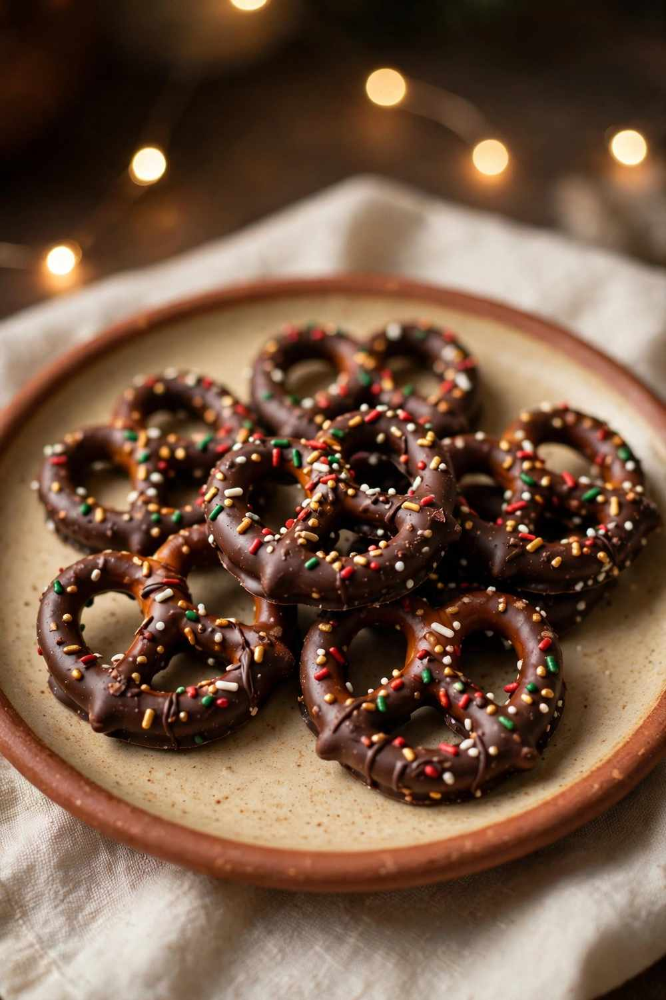
Crunchy pretzels dipped in chocolate and finished with sprinkles or crushed candy cane, these are sweet, salty, and a hit with kids. The chocolate shell snaps as you bite in, the pretzel stays crisp inside, and the colorful topping makes them look festive. They take minutes to make and are perfect for gift bags or a dessert table.
Ingredients
- 12 ounces semisweet or milk chocolate, chopped
- 24 mini pretzels
- 1/4 cup sprinkles or crushed candy cane
Directions
- Line a baking sheet with parchment paper and set it on the counter near your work area.
- Place the chopped chocolate in a microwave-safe bowl and melt it in 30-second bursts, stirring well between each, until completely smooth and glossy.
- Hold a pretzel by one edge and dip it halfway into the melted chocolate, turning it slightly so the coating is even.
- Lift the pretzel out and let the extra chocolate drip off for a few seconds, then lay it flat on the parchment.
- While the chocolate is still wet, sprinkle the top with sprinkles or crushed candy cane.
- Repeat with the remaining pretzels, working one at a time so the topping sticks before the chocolate sets.
- Chill for 20 minutes, until the chocolate is completely set and firm to the touch, then serve or store in an airtight container.
22. Reindeer Chow

Chocolate-coated cereal tossed with powdered sugar, pretzels, and red and green candies, this is the snack mix everyone grazes on all night. It is sweet, salty, and crunchy, with a snowy powdered-sugar coating that makes it look like winter. Set out a big bowl and keep it full, because it disappears fast.
Ingredients
- 4 cups rice cereal squares
- 1 cup semisweet chocolate chips
- 1/4 cup creamy peanut butter
- 2 tablespoons unsalted butter
- 1 teaspoon vanilla extract
- 1 1/2 cups powdered sugar
- 1 cup mini pretzels
- 1/2 cup red and green candies
Directions
- Place the semisweet chocolate chips, peanut butter, and butter in a large microwave-safe bowl and melt them in 30-second bursts, stirring between each, until smooth and glossy.
- Stir the vanilla extract into the warm chocolate mixture until combined.
- Pour the chocolate mixture over the rice cereal squares in a large bowl and toss gently with a spatula until every piece is evenly coated.
- Pour the powdered sugar into a large resealable bag, add the coated cereal, seal the bag, and shake it well until the cereal is covered in a snowy white coat.
- Spread the coated cereal in a single layer on a baking sheet and let it cool for 15 minutes so the chocolate firms up.
- Transfer the cooled cereal to a large bowl and toss it gently with the mini pretzels and red and green candies until mixed.
- Serve at once in a festive bowl, or store in an airtight container for up to 1 week.
23. Christmas Fudge
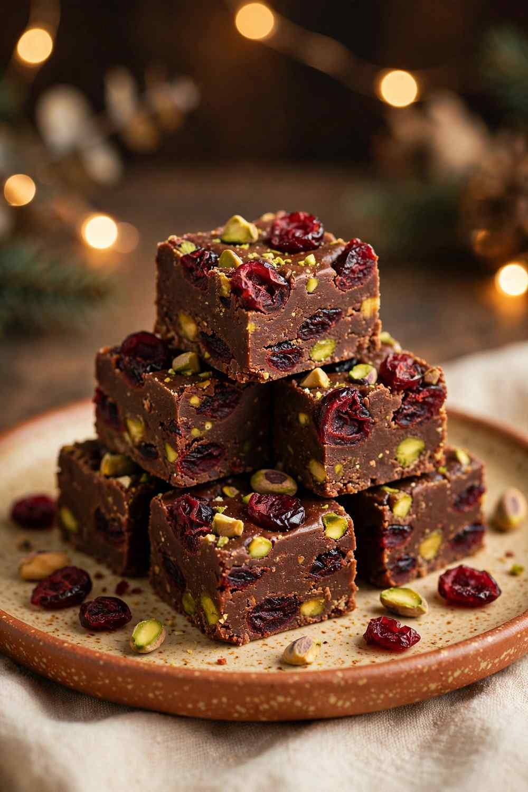
Rich, creamy fudge with cranberries and pistachios, cut into neat squares, it keeps for weeks and makes a wonderful gift. The white chocolate base is sweet and smooth, the cranberries add tart chewiness, and the pistachios bring a salty crunch and a festive green color. Wrap squares in cellophane for an easy homemade present.
Ingredients
- 12 ounces white chocolate chips
- 1 can (14 ounces) sweetened condensed milk
- 1/2 cup dried cranberries
- 1/2 cup chopped pistachios
- 1 teaspoon vanilla extract
- 1 pinch salt
Directions
- Line an 8-inch square pan with parchment paper, leaving overhang on two sides for easy lifting.
- Place the white chocolate chips and sweetened condensed milk in a large microwave-safe bowl.
- Melt the mixture in 30-second bursts, stirring well between each, until the chocolate is completely melted and the mixture is smooth and glossy.
- Stir in the dried cranberries, chopped pistachios, vanilla extract, and salt until everything is evenly spread through the fudge.
- Scrape the mixture into the lined pan and spread it into an even layer, smoothing the top with a spatula.
- Chill for at least 3 hours, until the fudge is completely firm and holds its shape.
- Lift the fudge out of the pan using the parchment overhang and cut it into squares with a sharp knife, wiping the blade clean between cuts.
24. Toffee Bark

Buttery toffee topped with chocolate and chopped nuts, broken into shards, this is sweet, crunchy, and dangerously easy to keep eating. The toffee is crisp and caramelized, the chocolate melts over it, and the nuts add a rich, toasty crunch. Break it into pieces and pile it on a plate for guests to graze on all evening.
Ingredients
- 1 cup unsalted butter
- 1 cup brown sugar
- 12 ounces semisweet chocolate, chopped
- 1/2 cup chopped pecans or almonds
- 1 pinch salt
Directions
- Line a rimmed baking sheet with parchment paper and set it on the counter.
- Melt the butter and brown sugar in a medium saucepan over medium heat, stirring constantly, until the mixture comes to a boil.
- Once it boils, stop stirring and cook for 3 minutes, until the toffee is deep amber and slightly thickened. Watch it closely so it does not burn.
- Pour the hot toffee onto the parchment and spread it into a thin, even layer with a spatula. Let it cool for 5 minutes, until it is warm but no longer liquid.
- Melt the semisweet chocolate in a microwave-safe bowl in 30-second bursts, stirring between each, until smooth, then spread it evenly over the toffee.
- Sprinkle the chopped pecans or almonds and the pinch of salt evenly over the chocolate while it is still soft.
- Chill for 1 hour, until completely firm, then lift the bark from the pan and break it into shards.
25. Chocolate-Dipped Marshmallows

Fluffy marshmallows dipped in chocolate and rolled in sprinkles or crushed candy cane, these are fun to make with kids and look like little snowman treats. The chocolate shell is crisp, the marshmallow inside stays soft and chewy, and the colorful coating makes them look festive on a stick. Stand them in a glass and let guests grab one.
Ingredients
- 12 large marshmallows
- 8 ounces semisweet chocolate, chopped
- 1/4 cup sprinkles or crushed candy cane
- 12 lollipop sticks or wooden skewers
Directions
- Push a lollipop stick or wooden skewer into the center of each marshmallow, going about halfway through so it stays secure without poking out the top.
- Place the chopped semisweet chocolate in a microwave-safe bowl and melt it in 30-second bursts, stirring well between each, until completely smooth and glossy.
- Hold a marshmallow by its stick and dip it into the melted chocolate, turning it slowly so it is evenly coated on all sides.
- Lift the marshmallow out and let the extra chocolate drip off for a few seconds, turning it gently so the coating stays even.
- While the chocolate is still wet, roll the marshmallow in the sprinkles or crushed candy cane until coated.
- Stand each marshmallow upright in a tall glass or push the sticks into a block of foam so the chocolate can set without smudging.
- Let the marshmallows stand for 20 minutes, until the chocolate is completely set, then serve.
Make-ahead & storage tips
Almost everything in this roundup is made a day or two ahead — that is the whole point of no-bake desserts. Truffles and bars keep for a week in the refrigerator in an airtight container. Cheesecakes and pies need a full night in the fridge to set properly, so make them the day before the party. Mousse cups and parfaits can be assembled the morning of the party and kept cold until serving. Freeze what you cannot use, in portions, and thaw in the refrigerator overnight.
Related articles
More roundups from the same table:
- 30+ Christmas Cookie Recipes Everyone Will Love — classic, chocolate, spiced, filled and decorated cookies.
- 30+ Vintage Christmas Cookie Recipes — old-fashioned cookies from grandma’s kitchen.
- 25+ Christmas Snowball Cookie Recipes — buttery snowball cookies in every flavor.
- 25+ Christmas Side Dishes for Your Holiday Table — roasted vegetables, creamy potatoes, stuffing and cranberry sauce.
Keep exploring
- Browse the Desserts & Baking roundups — cookies, cakes, pies and sweet bakes.
- Browse all six categories — breakfast, lunch and dinner, desserts, air fryer, healthy recipes, and appetizers.
- More about the kitchen — what The Tasty Recipe Co is and how it works.
About The Tasty Recipe Co: Learn how we research, organize and review our food collections — see our About Us and Editorial Policy pages.
Recipe results can vary with ingredients, equipment, and technique. See our Disclaimer for food-safety and allergy notes.